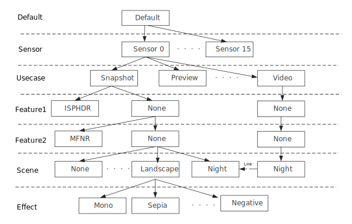

| Prerequisites | |
The Chromatix 7 data structure begins with a default scenario created in the root folder of your project. Add child scenarios to your project so that you can tune for various use cases, features, scenes, and effects that diverge from the parent of the child. A directory structure for the scenario is added to its parent in the project folder whenever you add a scenario. When you tune the parameters for a child scenario, you only need to tune the deltas. XML representing the deltas is created and stored in the child scenario directory structure. When you generate a binary, the child inherits the settings of its parent except for the parameters that are tuned explicitly for the child. Refer to Chromatix 7 Mode Tree: Inheritance, Use Cases, Scenes, and Other Scenarios (Part 1) and Chromatix 7 Mode Tree: Inheritance, Use Cases, Scenes, and Other Scenarios (Part 2)for more information.
The following image is for example purposes and is meant to highlight the hierarchy of modes (e.g., default, sensor, usecase, etc.). It does not include all available options for each mode. Notice that it is possible to link modes at the same level. In doing so, the source mode (Video|None|None|Night in the example) is configured with the XML of its target. 
Note: If you want a child scenario to have the same regions and triggers as its parent, add regions to the default scenario before adding child scenarios.
Prerequisites: A loaded project is required before you can add or edit a scenario.